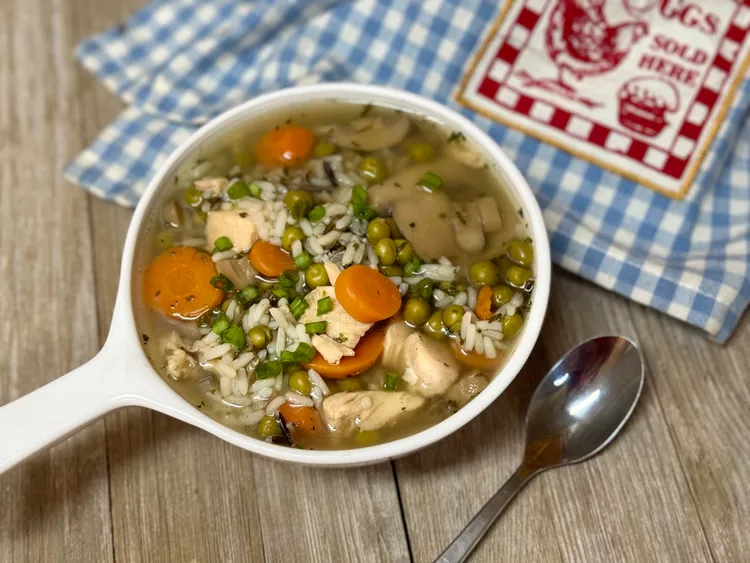

Chicken and Wild Rice Soup

This quick and easy no-chop chicken and wild rice soup is for those weeks when you have neitehr the time or energy to pull of a soup with freshly-chopped ingredients. This is my big batch go-to for Sunday weekly lunch prep.
Ingredients:
- 2 cups water
- 2 cups chicken broth
- 1 can sweet peas and sliced carrots, drained
- 1 can mushroom pieces and stems, drained
- 1 can premium chicken breast in water, drained
- 1 box long grain and wild rice mix
- salt and freshly gound black pepper to taste
- chopped green onions for garnish(optional)
Steps:
- Step 1: Combine water, broth, peas, and carrots, mushrooms, chicken, and rice mix with seasoning in a large pot
- Step 2: Bring to a boil over high high, reducing to a simmer and cover for about 20 minutes or until desired temperature
- Step 3: ladle into bowls; season with salt and pepper. Garnish with chopped green onions.
Back to Recipes